<!DOCTYPE html>
<html lang="en">
<head>
    <meta charset="UTF-8">
    <meta name="viewport" content="width=device-width, initial-scale=1.0">
    <script src="https://cdn.jsdelivr.net/npm/marked/marked.min.js"></script>
    <title>Cronologia</title>
</head>
<body>
    <div id="content"></div>
<script>
    const markdownText = `# BASE TEÓRICA - PESQUISA

Origens:
As origens de Portugal remontam à Guerra da Reconquista, iniciada após os ensinamentos de Maomé e a criação do Islamismo. A fé muçulmana espalhou-se pela Península Arábica e pelo norte da África. Os povos dessa região, chamados de mouros, invadiram a Península Ibérica em 711 e avançaram até a França, sendo finalmente derrotados por Carlos Martel na Batalha de Poitiers. Apenas um reino resistiu à conquista árabe e manteve sua independência: o Reino Visigodo das Astúrias.
Esse reino iniciou um processo que duraria aproximadamente 700 anos: a Guerra da Reconquista. Aos poucos, as forças cristãs foram retomando territórios da península. Nesse contexto, surgiram novos reinos e condados, entre os quais se destacaria o futuro Portugal.

Condado Portucalense:
Em 868 foi fundado, na cidade de Portucale, o Condado Portucalense, que mais tarde daria origem a Portugal. Nesse período, o território era vassalo do Reino de Leão.
Pouco mais de um século e meio depois, em 1111, nasceu uma figura quase lendária da história portuguesa: D. Afonso Henriques, ou D. Afonso I, responsável por elevar o condado à condição de reino. Um ano após seu nascimento, seu pai, D. Henrique, faleceu, tornando-o o novo conde. Contudo, por ser ainda muito jovem, sua mãe, D. Teresa, assumiu a regência.
Em 1128, já próximo da maioridade, D. Afonso entrou em conflito com a mãe, que pretendia casar-se com um membro da realeza da Galícia - decisão que ameaçava a autonomia do condado. Expulso da cidade, Afonso retornou com um exército e enfrentou as tropas de sua mãe na Batalha de São Mamede, derrotando-a e assumindo o governo do condado. A partir de então, deu continuidade à longa Guerra da Reconquista.
Em 1139, Afonso enfrentou um exército mouro em Ourique. Em desvantagem numérica, não via possibilidades de vitória, até que, segundo a tradição, teve uma visão divina. Deus lhe teria ordenado converter toda a população do condado ao Cristianismo, garantindo-lhe a vitória. Após vencer a batalha, seu próprio exército o proclamou rei, transformando o Condado Portucalense no Reino de Portugal.

Reino de Portugal, o pioneiro das Grandes Navegações:
Em 1249, Portugal conquistou o Algarve, encerrando a Guerra de Reconquista para os portugueses - embora, para os espanhóis, o conflito ainda prosseguisse. Nesse momento, Portugal reunia condições únicas para se tornar pioneiro nas grandes navegações: possuía estabilidade política proporcionada pelo precoce surgimento de sua monarquia nacional, localização privilegiada junto ao mar e investimentos constantes em conhecimentos náuticos, como os da célebre Escola de Sagres.
Assim, os portugueses realizaram expedições que marcaram a expansão marítima. Em 1336 alcançaram as Ilhas Canárias; em 1419 descobriram a Ilha da Madeira; em 1427 chegaram aos Açores. Depois, avançaram pelo litoral africano: Cabo Branco (atual Mauritânia) em 1441; Cabo Verde em 1455; Serra Leoa em 1460; Benim e a foz do Rio Congo em 1483; até contornar, em 1488, o Cabo das Tormentas, rebatizado de Cabo da Boa Esperança. Esse feito abriu uma rota marítima para as Índias, alternativa necessária desde que os turcos otomanos bloquearam o acesso terrestre em 1453.
Todo esse processo culminou na célebre viagem de Vasco da Gama em 1497. Seguindo o périplo africano - navegação rente ao litoral para evitar que os navios se perdessem -, ele alcançou as Índias em 1498 e retornou triunfante a Portugal, trazendo especiarias e consolidando a nova rota para o Oriente.

Descoberta do Brasil:
Apesar do sucesso em alcançar as Índias e trazer especiarias, Vasco da Gama não conseguiu estabelecer um ponto comercial estável e acabou sendo expulso. Diante disso, a Coroa Portuguesa decidiu enviar uma nova expedição, chefiada pelo almirante Pedro Álvares Cabral. Seguindo a rota do périplo africano, Cabral afastou-se excessivamente da costa, desviando do caminho e chegando, em 1500, ao litoral brasileiro, na região de Porto Seguro, atual Bahia.
Alguns historiadores, no entanto, consideram improvável que o desvio tenha sido acidental, sugerindo que já havia suspeitas ou mesmo informações de que existiriam terras naquela região. Afinal, oito anos antes, em 1492, Cristóvão Colombo já havia chegado à América.
Independentemente de ter sido intencional ou não, Cabral fincou a bandeira portuguesa no território e tomou posse em nome do rei. Como seu objetivo principal permanecia nas Índias, seguiu viagem, estabelecendo um entreposto em Calicute - logo destruído por ataques árabes - e outro em Cochim, que se manteve ativo.
Nos anos seguintes, a costa brasileira passou a ser explorada gradualmente, até que, em 1532, foi fundada a primeira colônia estável, em São Vicente.

Capitanias e o Tratado de Tordesilhas:
Ao voltar um pouco no tempo, para 1494, presenciamos Portugal e Espanha (então representada por Castela) assinarem o Tratado de Tordesilhas, que dividia o mundo em duas zonas de influência. Foi traçada uma linha imaginária a 370 léguas a oeste das ilhas de Cabo Verde: as terras a leste seriam portuguesas, e as a oeste, espanholas.
Com isso, Portugal ficou com apenas uma pequena faixa do atual território brasileiro. Para viabilizar sua exploração, a Coroa Portuguesa instituiu o sistema de Capitanias Hereditárias, distribuindo grandes lotes de terra a capitães-donatários, cujo poder era transmitido por herança.
Das diversas capitanias criadas, apenas algumas prosperaram, sobretudo São Vicente e Pernambuco, que se tornaram polos de colonização e produção.

Era pau-brasil e era açucareira:
O primeiro produto que despertou o interesse português no Brasil foi o pau-brasil, árvore de madeira avermelhada da qual se extraía um corante muito valorizado na Europa. Daí surgiu o próprio nome do país, assim como o gentílico “brasileiro”, que originalmente designava quem trabalhava na extração dessa madeira.
Nesse período, os indígenas tiveram papel fundamental: ajudavam a localizar e cortar as árvores, em troca de objetos europeus, por meio do escambo. O contato inicial entre portugueses e povos originários foi relativamente pacífico, embora marcado por conflitos ocasionais.
Com o tempo, percebeu-se que o território oferecia condições ideais para a plantação de cana-de-açúcar, o que levou à implantação da monocultura açucareira, especialmente em São Vicente e Pernambuco. Como a exploração indígena como mão de obra mostrou-se inviável, os portugueses recorreram cada vez mais à escravização de africanos, que se tornaram a base do trabalho nos engenhos.
Por séculos, o açúcar foi o principal produto da economia colonial, sustentando a riqueza portuguesa, mesmo após a descoberta de metais preciosos no interior do Brasil.

União Ibérica e mineração aurífera:
Os tempos de prosperidade de Portugal sofreram abalo com o reinado de D. Sebastião (1568-1578). Jovem e ambicioso, ele organizou uma expedição militar ao Marrocos, mas desapareceu em batalha, sem deixar herdeiros. O trono passou ao seu tio, o Cardeal D. Henrique, que também morreu pouco depois, sem descendência.
Sem sucessor direto, a coroa portuguesa foi disputada. Entre os pretendentes estava Filipe II da Espanha, que invadiu Portugal e venceu a Batalha de Alcântara (1580). Assim, foi proclamado rei de Portugal como Filipe I, dando início à União Ibérica (1580-1640), quando Portugal e Espanha passaram a ter o mesmo monarca, embora mantendo administrações distintas.
A união, entretanto, trouxe consequências negativas. Potências rivais da Espanha, como França, Holanda e Inglaterra, passaram a atacar colônias portuguesas, rompendo antigas alianças. Os holandeses, por exemplo, invadiram Bahia (1624), Pernambuco (1630) e chegaram a ocupar partes da África e da Ásia, aprendendo técnicas de produção açucareira que aplicaram em suas colônias das Antilhas, reduzindo a hegemonia portuguesa no comércio do açúcar.
Nesse período, a exploração do interior brasileiro ganhou força, sobretudo com a ação dos bandeirantes. Foi assim que se descobriu ouro em Minas Gerais, no final do século XVII. A corrida pelo metal atraiu multidões ao interior, mas também gerou forte intervenção da Coroa, que criou impostos rígidos, como a derrama, preparando o cenário para revoltas futuras.
Após sessenta anos de dominação, Portugal recuperou sua independência com a Restauração de 1640, quando D. João IV foi coroado. No entanto, os danos econômicos e a concorrência internacional já haviam diminuído o antigo prestígio luso.

Guerras Napoleônicas e Independência do Brasil:
O fim do século XVIII foi marcado pela Revolução Francesa (1789), que abriu espaço para a ascensão de Napoleão Bonaparte. Em busca de expandir sua influência, Napoleão decretou, em 1806, o Bloqueio Continental, que proibia as nações europeias de comercializarem com a Inglaterra. Portugal, entretanto, aliado histórico dos britânicos desde o Tratado de Methuen (1703) - conhecido como “tratado dos panos e vinhos” - manteve relações comerciais com os ingleses, o que motivou a invasão francesa em 1807.
Com o avanço francês sobre Lisboa, a família real portuguesa, levando cerca de 15 mil pessoas da corte e grande parte dos fundos do reino, refugiou-se no Brasil sob escolta da marinha inglesa. A transferência da corte para o Rio de Janeiro (1808) transformou profundamente a colônia: decretou-se a abertura dos portos às nações amigas, rompendo o antigo monopólio comercial; fundaram-se instituições como o Banco do Brasil e a Imprensa Régia; e iniciaram-se obras e espaços culturais duradouros, como o Jardim Botânico e o Museu Nacional.
Após a derrota de Napoleão, cresceu em Portugal o movimento para o retorno da família real. A Revolução Liberal do Porto (1820) instaurou a monarquia constitucional e exigiu a volta de D. João VI, que retornou em 1821, deixando no Brasil seu filho, o príncipe regente D. Pedro. Pressionado também a regressar, D. Pedro se recusou no episódio conhecido como Dia do Fico (1822), que marcou a resistência contra as Cortes portuguesas. Meses depois, nas margens do rio Ipiranga, proclamou a célebre frase “Independência ou Morte!”, iniciando o processo de separação política do Brasil.
O rompimento, contudo, não ocorreu sem conflitos: houve batalhas sangrentas em diversas regiões, das quais participaram figuras como Maria Quitéria, que se alistou disfarçada de homem e foi reconhecida por D. Pedro I com a Ordem Imperial do Cruzeiro, e o general francês Pierre Labatut, veterano das guerras napoleônicas, que liderou tropas a favor da independência. Após vitórias militares, o Brasil foi reconhecido como independente por Portugal e por potências internacionais, como os Estados Unidos, que apoiaram o processo em consonância com a Doutrina Monroe.
Em 1824, foi outorgada a primeira Constituição brasileira, marcada pelo centralismo imperial. O governo de D. Pedro I, porém, enfrentou diversas revoltas e impopularidade, em parte por sua origem portuguesa e pelo autoritarismo. Em 1831, pressionado por crises internas e envolvido em uma disputa dinástica em Portugal - onde se tornou D. Pedro IV após a morte do pai -, ele abdicou em favor de seu filho, ainda criança.
Seguiu-se o período de Regência (1831-1840), caracterizado por instabilidade política e revoltas regionais. Com a declaração de maioridade antecipada, iniciou-se o Segundo Reinado, sob D. Pedro II, período em que o Brasil consolidou sua unidade territorial, expandiu a economia cafeeira e se projetou como império escravista no cenário internacional.


# ADAPTAÇÃO PARA O CONTEXTO DO TRABALHO

Seŕa feito um painel expositivo, assim como para alguns outros assuntos. Esse painel, no entanto, seŕa bem maior do que os demais. Ele poderá ter até 4m de largura por 1,5m de altura, dependendo de como a montagem física for feita. O estilo será de "Parede Maluca" ou "Quadro de Evidências", com elementos conectados por barbantes de cores diversas que ligam tachinhas sobre o quadro. O destaque do painel será a linha do tempo descrita pela pesquisa teórica, com os principais fatos ordenados cronologicamente. Cada fato com seu nome, texto e imagem(ns) forma um nó do quadro. Os nós serão ligados entre si por barbantes de cores distintas, sendo cada cor um período histórico, enquanto as ligações feitas dentro dos próprios nós, se presentes, serão efitas usando setas de papel colorido. Cada nó terá a descrição completa do fato, semelhante à apresentada na pesquisa teórica, e elementos de transição ficarão posicionados entre os nós. Assim, cria-se a sensação de continuidade entre as seções, com intento de simular uma narrativa suave. Na parte inferior haverá uma legenda de cores.


# ESTRUTURA DO PAINEL E SEU CONTEÚDO

## 1. Estrutura geral

**Tamanho: 4,00 m (larg) × 1,50 m (alt)**
**Estilo: “Parede Maluca / Quadro de Evidências” - cartões / placas (nós) fixados com tachinhas, ligados por barbantes coloridos; setas de papel indicam conexões internas.**
**Leitura principal: linha do tempo horizontal (da esquerda para a direita). Os nós são “estações” da linha; entre os nós, elementos de transição (barbante e notas curtas) criam continuidade.**

## 2. Chave de cores (fios) - cada cor = um grande período

Azul-escuro -> Reconquista e formação (pré-1400)

Verde -> Expansão atlântica e Descobrimentos (séculos XV-XVI)

Terracota -> Período inicial colonial / capitanias & economia extractiva (séculos XVI)

Marrom -> Período açucareiro consolidado e conflitos atlânticos (séculos XVI-XVII)

Dourado -> Mineração e rearranjos do século XVIII

Roxo -> Crises europeias, União Ibérica e restauração (séculos XVI-XVII)

Vermelho -> Guerras Napoleônicas e processo de Independência (final Séc. XVIII - 1822)

## 3. Nós:

### Nó 1 - Reconhecimento e consolidação monárquica

Período: 1143-1179

Texto principal: D. Afonso Henriques transforma o Condado Portucalense em entidade política independente: no contexto da Guerra da Reconquista, e após vencer a Batalha de São Mamede (1128) e, mais tarde, Ourique (1139) - episódio envolto em lenda - o líder é proclamado rei por suas tropas. Entre 1143 e as décadas seguintes consolida-se a autoridade régia sobre o território que dará origem ao Reino de Portugal, iniciando a estrutura monárquica que permitirá a organização política e militar necessária às futuras empresas ultramarinas.

Imagem:

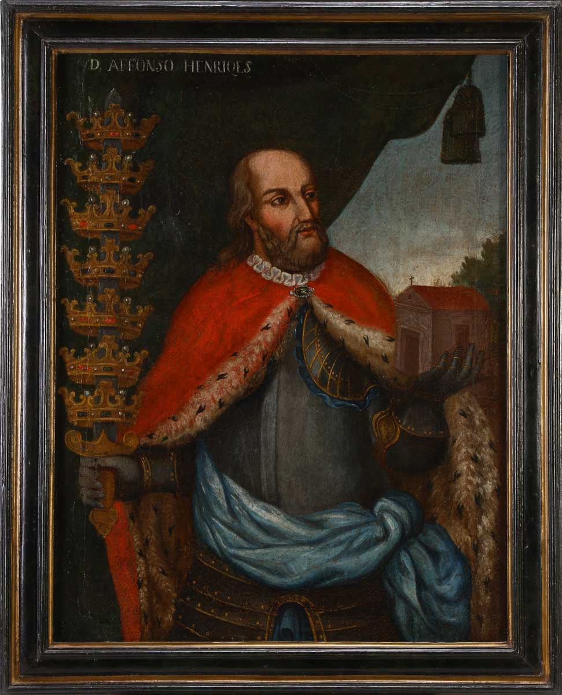


Conexão ao próximo nó: Consolidação interna --> abertura para projeção marítima e expansão atlântica.


### Nó 2 - Ceuta e primeiras expansões atlânticas

Período: 1415~1480

Texto principal: A tomada de Ceuta (1415) marca o início da saída portuguesa além-mar e a acumulação de experiência naval. Nas décadas seguintes avançam as explorações e os povoamentos ultramarinos: ilhas atlânticas como a Madeira (1419) e os Açores (1427) são colonizadas, consolidando técnicas de navegação, administração colonial e monocultura em ilhas - ensaio prático que preparará as grandes viagens ao longo da costa africana.

Imagem:

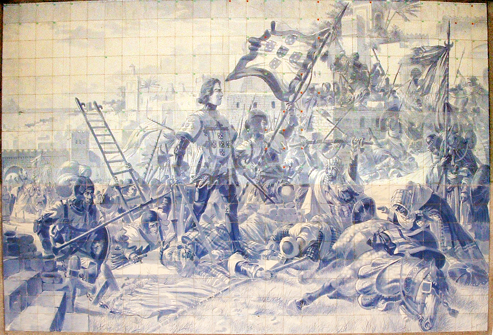
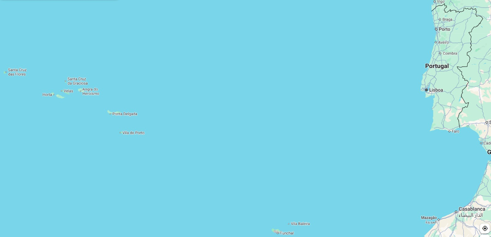

Conexão ao próximo nó: A experiência atlântica cria a necessidade de estabelecer regras para repartição do novo mundo.


### Nó 3 - Tratado de Tordesilhas

Data: 1494

Texto principal: Portugal e Castela (Espanha) assinam o Tratado de Tordesilhas, traçando uma linha imaginária a 370 léguas a oeste das ilhas de Cabo Verde. A divisão define zonas de influência ibéricas no Atlântico: terras a leste cabem a Portugal; a oeste, à Espanha. O acordo orienta as reivindicações territoriais e condiciona a organização da colonização, limitando e, ao mesmo tempo, legitimando a atuação portuguesa no Atlântico oriental e no litoral brasileiro.

Imagem:

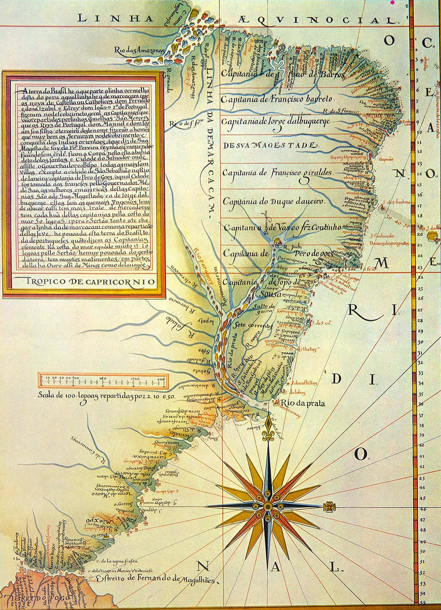

Conexão ao próximo nó: Linha divisória --> expedições portuguesas e chegada ao litoral brasileiro, com exploração limitada à costa.


### Nó 4 - Chegada de Cabral ao Brasil

Data: 1500

Texto principal: A frota de Pedro Álvares Cabral alcança o litoral do que viria a ser o Brasil, em Porto Seguro (1500), e toma posse em nome da Coroa. Embora haja debate sobre acidentalidade ou intenção, o evento marca o início da soberania portuguesa sobre a costa atlântica da América do Sul e o arranque das explorações costeiras que caracterizarão as primeiras décadas de contato e extração.

Imagem:


Conexão ao próximo nó: Primeiro contato --> exploração de recursos naturais e estabelecimento de feitorias.


### Nó 5 - Fase pré-colonial: feitorias e pau-brasil

Período: 1500-1530

Texto principal: Nos primeiros trinta anos a ocupação é rarefeita: estabelecem-se feitorias e pontos de escambo voltados ao extrativismo do pau-brasil, madeira valorizada pelo corante vermelho. Os portugueses atuam por feitorias e comércio com povos indígenas, utilizando o escambo como principal forma de interação; a ocupação efetiva do território permanece esparsa, sem povoamento massivo.

Imagem:


Conexão ao próximo nó: Limitação do modelo de feitorias --> necessidade de núcleos coloniais estáveis (fundação de povoados).


### Nó 6 - Fundação de São Vicente

Data: 1532

Texto principal: Martim Afonso de Sousa funda São Vicente (1532), primeiro núcleo colonial estável e ponto de partida para a colonização portuguesa efetiva no litoral sudeste. A instalação de povoações permanentes inaugura um novo patamar de ocupação, com estruturas administrativas, agricultura de subsistência e início de um ordenamento territorial mais consolidado.

Imagem:


Conexão ao próximo nó: Núcleos estáveis --> sistema de capitanias para ampliar colonização.


### Nó 7 - Capitanias Hereditárias

Data: 1534

Texto principal: Para organizar e ampliar a ocupação, a Coroa institui as Capitanias Hereditárias (1534), cedendo grandes faixas de terra a capitães-donatários encarregados da colonização e defesa. O modelo visava descentralizar custos e atrair investimentos privados; porém apenas algumas capitanias prosperaram (notadamente São Vicente e Pernambuco), enquanto outras fracassaram, evidenciando dificuldades administrativas e logísticas no novo território.

Imagem:

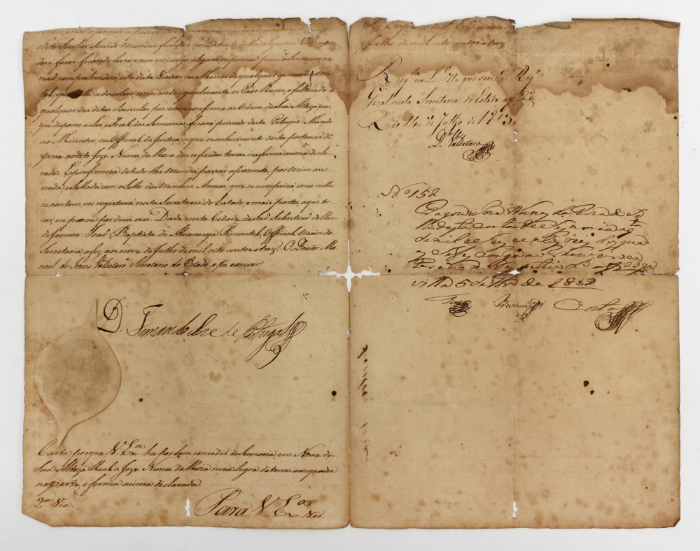

Conexão ao próximo nó: Fracasso parcial das capitanias --> necessidade de centralização administrativa (Governo-Geral).


### Nó 8 - Governo-Geral em Salvador (Tomé de Sousa)

Data: 1549

Texto principal: Diante das limitações das capitanias, a Coroa cria o Governo-Geral (1549) e envia Tomé de Sousa para estabelecer uma administração centralizada com sede em Salvador. O novo aparelho busca coordenar defesa, justiça e evangelização, representando a resposta metropolitana para organizar política, fiscal e militarmente a colônia diante de ameaças externas e da dispersão das capitanias.

Imagem:

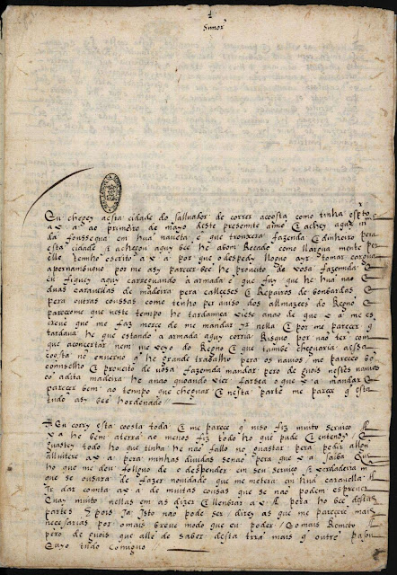
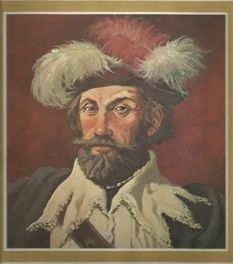

Conexão ao próximo nó: Administração centralizada --> consolidação da economia açucareira no Nordeste.


### Nó 9 - Apogeu açucareiro, trabalho escravo e guerras atlânticas

[Complexo, divido em 3 seções, conectadas por setas]

Período: Séculos XVI-XVII

---
**Seções:**

Economia e paisagem: O Nordeste, especialmente Pernambuco, torna-se o coração da monocultura açucareira para exportação, com grandes engenhos e casa-grande como eixo produtivo. --> (seta intra-nó).

Mão de obra: A escassez de trabalho levou inicialmente à tentativa de escravizar indígenas; diante das resistências e de mortalidade, intensificou-se o tráfico de africanos escravizados, que se tornaram a base do sistema produtivo. --> (seta intra-nó)

Conflitos atlânticos: A riqueza açucareira atraiu rivais europeus: ataques, incursões e guerras no Atlântico marcaram o período, exigindo esforço militar e alianças.

---

Imagem:

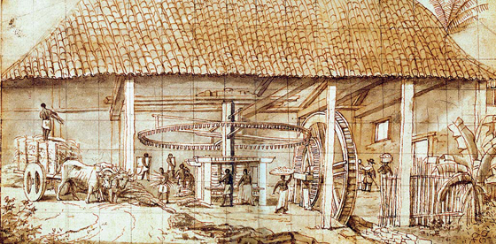

Conexão ao próximo nó: Competição atlântica e fragilidades --> invasões holandesas.


### Nó 10 - Domínio holandês no Nordeste

Período: 1630-1654

Texto principal: Entre 1630 e 1654, os holandeses ocuparam partes do Nordeste açucareiro (com 
destaque para Pernambuco), controlando áreas produtivas e redefinindo a dinâmica do açúcar. A presença holandesa expôs vulnerabilidades portuguesas, introduziu novas técnicas e redes comerciais e culminou em conflitos e retomadas que marcaram uma fase de crise e de reconfiguração do sistema colonial.

Imagem:

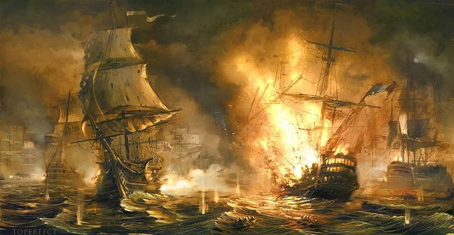

Conexão ao próximo nó: Retomada portuguesa e interiorização via bandeiras --> procura por riquezas no sertão.


### Nó 11 - Bandeiras e descoberta do ouro

Período: Fim séc. XVII - séc. XVIII

Texto principal: Expedições bandeirantes adentraram o interior, promovendo a expansão territorial e levando, no final do século XVII, à descoberta de ouro em Minas Gerais. O ciclo aurífero transformou o eixo econômico e demográfico, estimulou a urbanização de vilas serranas e intensificou a fiscalização régia sobre a extração e circulação de metais preciosos.

Imagem:

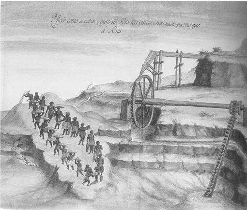
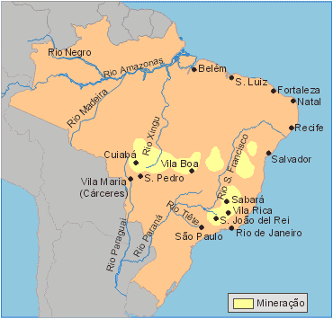

Conexão ao próximo nó: Enriquecimento regional --> centralização administrativa e mudança de eixo político.


### Nó 12 - Transferência da capital para o Rio de Janeiro

Data: 1763

Texto principal: Em 1763 a Coroa transfere a capital administrativa do Estado do Brasil para o Rio de Janeiro, sinalizando o deslocamento do eixo político-econômico para o sul e para a região próxima às áreas de comércio atlântico e às minas. A mudança reflete reorientações estratégicas e a importância crescente da cidade como porto e centro administrativo.

Imagem:


Conexão ao próximo nó: Novas tensões econômicas e ideais iluministas --> fermento de movimentos emancipacionistas.


### Nó 13 - Movimentos emancipacionistas e tensões internas

Período: 1789-1798
---
**Seções:**
---
Contexto ideológico: A circulação de ideias iluministas e o impacto de crises fiscais estimularam questionamentos ao pacto colonial. --> (seta intra-nó)

Movimentos: Surgem conspirações e movimentos como a Inconfidência Mineira e a Conjuração Baiana, que expressam frustrações sociais e elites locais influenciadas por ideais de autonomia. --> (seta intra-nó)

Repressão e legado: Embora muitos episódios sejam reprimidos, deixam legado político e simbólico que contribuirá para os processos de independência no início do século XIX.

Imagem:

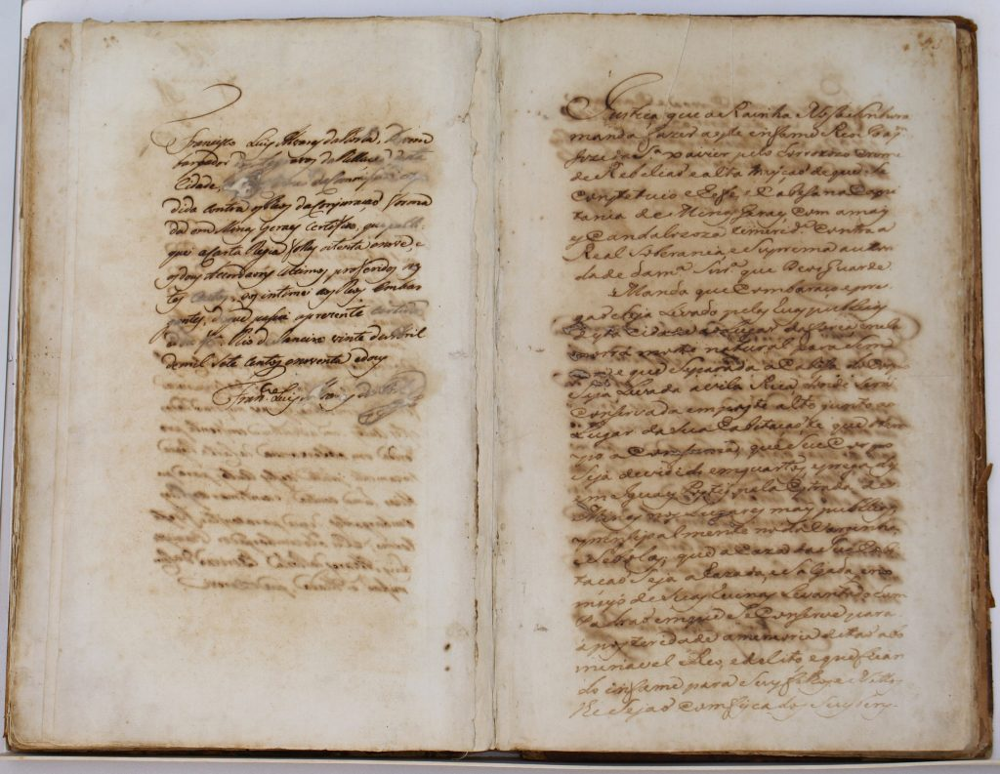
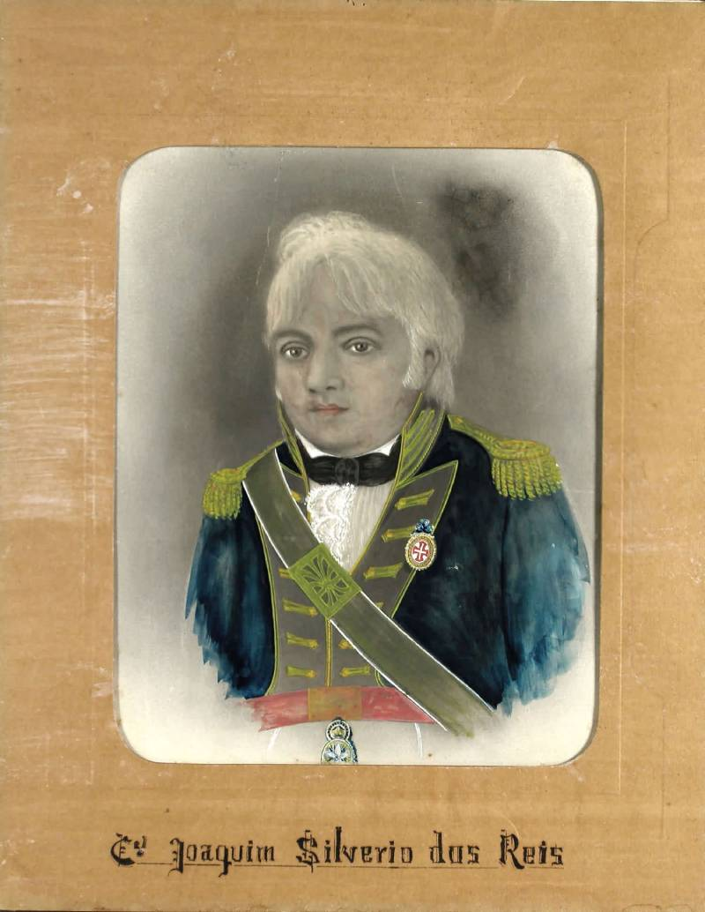

Conexão ao próximo nó: Radicalização europeia e crises internacionais --> invasões napoleônicas e transferência da Corte.


### Nó 14 - Corte no Rio, abertura comercial e Independência

Período: 1808-1822
---
**Seções:**
---
Fuga da corte e transformação colonial (1808): A invasão napoleônica obriga a família real a transferir-se para o Rio de Janeiro (1808). A presença da corte altera a ordem colonial: são abertas as portas comerciais, criam-se instituições (Banco do Brasil, Imprensa Régia) e o Rio ascende como centro político. --> (seta intra-nó)

Luta política e ruptura (1820-1822): A Revolução Liberal do Porto e a pressão das Cortes portuguesas para recolonizar o Brasil (retorno da corte) intensificam tensões. D. Pedro recusa voltar no Dia do Fico (1822) e proclama a Independência em 7 de setembro, encerrando o período colonial. --> (seta intra-nó)

Conflito militar e reconhecimento: A separação envolve confrontos regionais; lideranças e tropas (incl. voluntários e estrangeiros veteranos) participam das lutas até que o Brasil é reconhecido como independente.

Imagem:


Conexão com a borda do quadro: Independência --> fim do período colonial (marca de encerramento da cronologia).`;
document.getElementById("content").innerHTML = marked.parse(markdownText);
</script>
</body>
</html>
